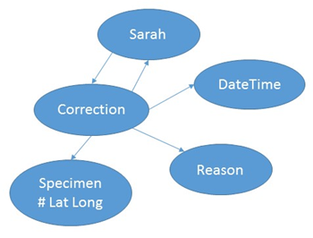

15 March 2017
To continue to improve the metadata of an object (physical or digital) after the initial collecting event or digitization event. The person who improved the metadata and how and when the improvement was made should be recorded. Any user should be able to find this information and use it to assess the actor.
Sarah is a metadata curator at a museum. She has found a mineral specimen that has the latitude and longitude inverted on the specimen card. She wants to fix this error in the electronic system the museum uses for managing specimens. Her department gets funding based on how much work they do, so the system needs to record who did the correction, when, and why.
Michael is a scientist accessing specimen at the museum. He discovers an error in the metadata for an item and wants to report it back to the museum. Part of his evaluation of the error is his expertise in the field/domain. Once the record is amended, it is important to capture when the change was made. If someone else previously published findings on this specimen the record needs to reflect that a change happened after the publication. Michael reports the error to the curator (Sarah) for correction.
Behind the scenes, the system records the correction, the reason/evidence for the correction, the identity of the curator, and the date/time of the correction. The previous incorrect data are also kept, but deprecated.
Sarah is returned to the splash page for the digital object she was curating. There is a visual evidence that the change was made.
Outsiders viewing the record should be able to see that changes have been made and when they were made.
The user locates incorrect data and clicks “edit” to make the correction
PerformedBy and Performed

The information should be changed by the curator, but there should also be a mechanism for reporting error by the end user to the curator or manager of the system. This is different than evaluating quality.